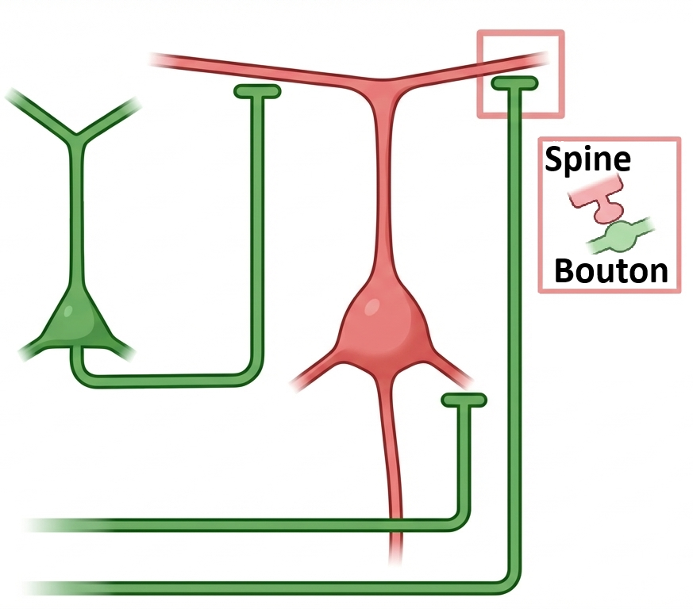
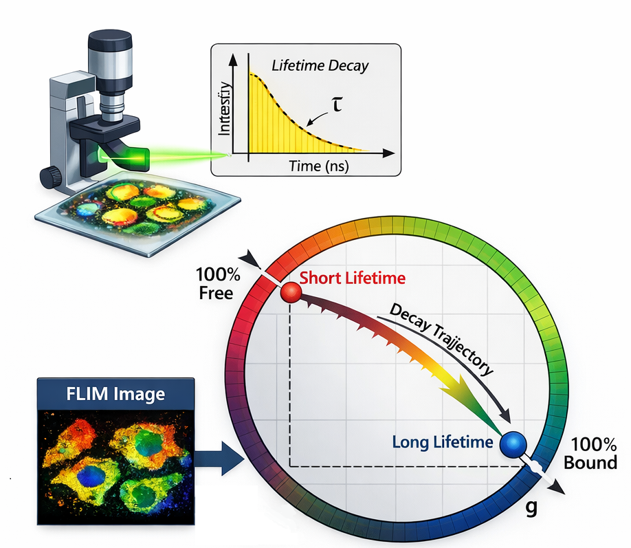
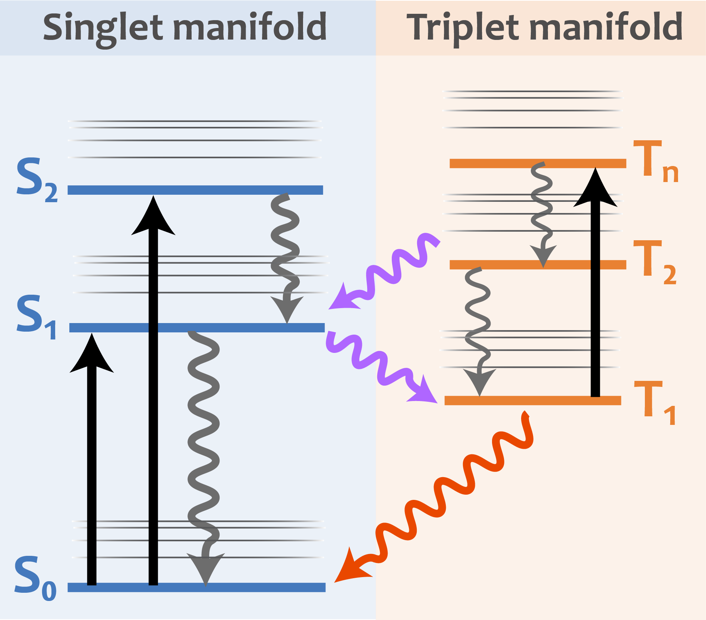

Research Areas
Systems-Level Inference from Single Neurons
By measuring synaptic glutamate release at spine resolution, we use single neurons as sensors of presynaptic population activity. This enables inference of network dynamics during behavior and learning.
Our approach leverages the fact that individual neurons integrate information from thousands of synaptic inputs. By measuring voltage dynamics in single neurons at subcellular resolution, we can infer the activity patterns of entire presynaptic networks.
Key Publications
Pojeong Park, J. David Wong-Campos, Daniel G. Itkis, Byung Hun Lee, Yitong Qi, Hunter C. Davis, Benjamin Antin, Amol Pasarkar, Jonathan B. Grimm, Sarah E. Plutkis, Luke D. Lavis, Adam E. Cohen. Dendritic excitations govern back-propagation via a spike-rate accelerometer. Nature Communications, 2025.
J. David Wong-Campos, Pojeong Park, Hunter C. Davis, Yitong Qi, He Tian, Daniel G. Itkis, Doyeon Kim, Jonathan B. Grimm, Sarah E. Plutkis, Luke D. Lavis, Adam E. Cohen. Voltage dynamics of dendritic integration and back-propagation in vivo. bioRxiv, 2023.
Doyeon Kim, Pojeong Park, Xiuyuan Li, J. David Wong-Campos, He Tian, Eric M. Moult, Jonathan B. Grimm, Luke D. Lavis, Adam E. Cohen. EPSILON: a method for pulse-chase labeling to probe synaptic AMPAR exocytosis during memory formation. Nature Neuroscience, 2025.

Quantitative Optical Measurements of Cellular Physiology
We develop quantitative imaging methods that enable stable measurements of biological activity during behavior and across time.
Traditional fluorescence imaging is plagued by artifacts from photobleaching, motion, and optical aberrations. We develop methods that provide quantitative, stable measurements that can be compared across experiments, animals, and labs.
Our methods enable long-term tracking of neural activity patterns, absolute measurements of membrane voltage, and more reproducible results.
Key Publications
F. Phil Brooks III, Hunter C. Davis, J. David Wong-Campos, Adam E. Cohen. Optical constraints on two-photon voltage imaging. Neurophotonics, 2024.
He Tian, Hunter C. Davis, J. David Wong-Campos, Pojeong Park, Linlin Z. Fan, Benjamin Gmeiner, Shahinoor Begum, Christopher A. Werley, Gabriel B. Borja, Himali Upadhyay, Himali Shah, Jane Jacques, Yitong Qi, Vicente Parot, Karl Deisseroth, Adam E. Cohen. Video-based pooled screening yields improved far-red voltage indicators. Nature Methods, 2023.

Photophysics of Dark States
Fluorescent probes are dynamical systems, and exploiting their non-equilibrium states enables new imaging modalities.
Fluorescent proteins and dyes exist in multiple photophysical states—bright, dark, and everything in between. Rather than treating these as nuisances, we exploit the dynamics of dark states to develop new measurement capabilities.
Our work has led to two-step excitation methods for improved voltage imaging, photoactivatable voltage indicators, and enhanced signal-to-noise through photophysical engineering.
Key Publications
J. David Wong-Campos, Dalia P. Ornelas-Huerta, Mackenzie Dion. Two-step excitation of fluorescent proteins with real intermediary states. arXiv, 2025.
J. David Wong-Campos, Mackenzie Dion. Multiphoton fluorescence excitation with real intermediary states. arXiv, 2025.
J. David Wong-Campos, J. V. Porto, Adam E. Cohen. Which way does stimulated emission go?. Journal of Physical Chemistry A, 2021.

Powered by Quarto. © Wong-Campos lab, 2025.